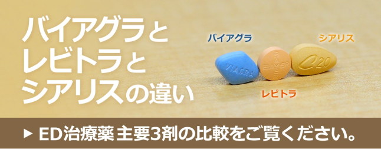
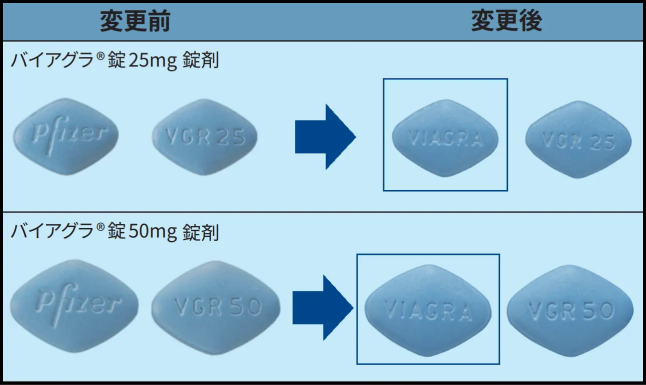
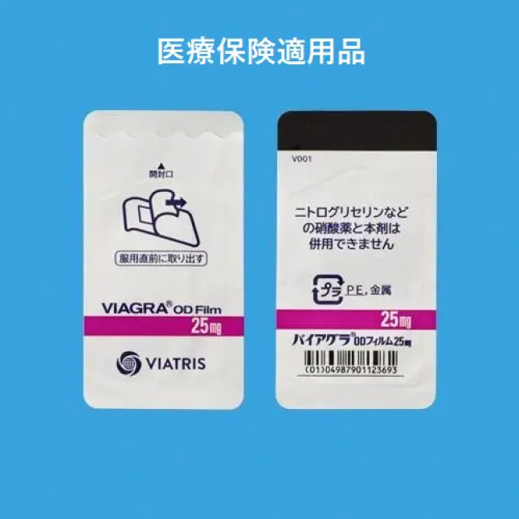
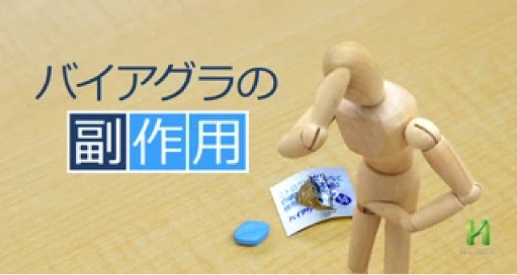
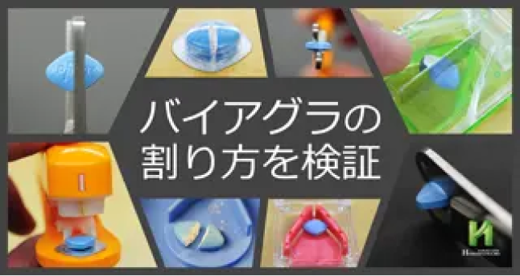
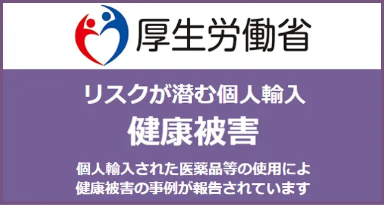
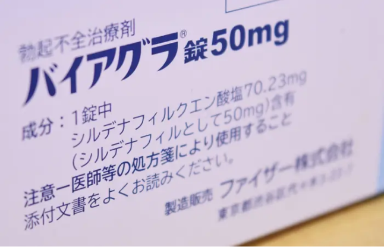
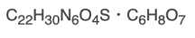
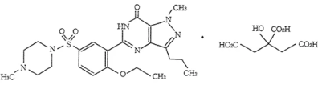
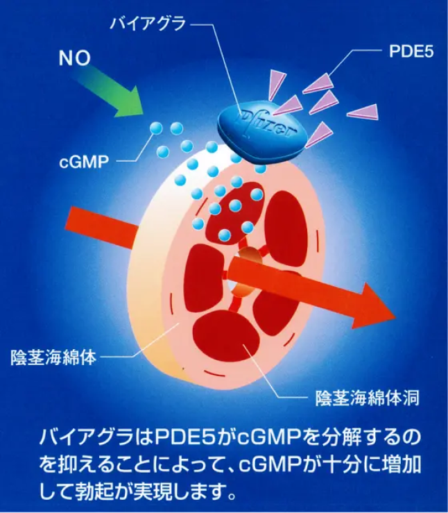

バイアグラの効果的な服用方法と処方
ヴィアトリス製薬
バイアグラ
25mg
1,300円
50mg
1,500円
ODフィルム 50mg
1,000円
※価格は税込です。
更新日：2025年4月4日
バイアグラとは、アメリカに本社を構えるファイザー株式会社によりＥＤ（勃起不全）治療薬として世界で初めて製品化されました。有効成分は「シルデナフィル」、製剤名は「シルデナフィルクエン酸塩錠」、販売名である「バイアグラ」はファイザーの所有する商標登録名です。
国際誕生はアメリカで1998年2月にて、日本国内では1999年1月25日に厚労省より製造販売承認を取得し、1999年3月23日に発売開始され、2021年9月よりファイザーからヴィアトリス製薬に販売移管されています。剤形は画像の通り菱形で青色のフィルムコート錠で、薬剤を割ると中身は白色です。
ファイザーは2016年10月に日本国内にて舌の上で溶かして服用するフィルム状のバイアグラ（バイアグラＯＤフィルム）も発売しました。コンパクトで財布等にも保管できる便利なフィルム剤形は国内でのED治療薬では唯一の剤形です。
錠剤、フィルム、どちらのバイアグラも薬価基準未収載医薬品と言われ保険適用外の薬に分類されていましたが不妊治療が保険適用となったことからバイアグラも薬価収載され2022年4月より「勃起不全による男性不妊」にのみ保険適用となりました。不妊目的以外は国内どこの医療機関に行っても自費診療となります。
詳しくは
また、バイアグラの日本国内での特許期間は2014年5月13日に満了を迎え、厚労省から製造販売認可を得たシルデナフィル錠VI（バイアグラのジェネリック医薬品）が国内製薬メーカー複数社から発売されています。
オンライン診療（郵送処方）
１万円以上で送料無料。来院歴が無くてもOK。即日配送。国内正規品のみ。土日も発送。
１万円以上で送料無料。来院歴が無くてもOK。
即日配送。国内正規品のみ。土日も発送。
目次
※知りたい情報をクリック
| 有効成分 | シルデナフィル(25mg・50mg) |
| 作用時間 | 25mg/4時間・50mg/5時間 |
| 服用方法 | 性行為の1時間前（噛んでも早く効かない） |
| 作用時間 | 硝酸剤及びNO供与剤(ニトログリセリン、亜硝酸アルミ、硝酸イソソルビド、ニコランジル等)・アミオダロン塩酸塩(アンカロン)・sGC刺激剤(リオシグアト：アデムパス)・グレープフルーツ |
| 服用禁忌 |
前項、併用禁忌薬投与中の患者 シルデナフィルに対して過敏症の既往歴のある人 低血圧患者(最大血圧90mmHG未満、又は最小血圧50mmHG未満)又は治療による管理のされていない高血圧患者(安静時最大血圧170mmHG以上、又は最小血圧100mmHG以上) 脳梗塞・脳出血や心筋梗塞の既往歴が最近6ヶ月以内にある患者 心血管障害で性行為が不適切と考えられる患者 網膜色素変性症患者 重度の肝機能障害のある患者 |
| 副作用 |
血管拡張(ほてり・潮紅)(20.8%)・頭痛(16.9%) 国内にて50mgを投与した77例中 酔いはしないが、お酒を飲んだ時の火照りの症状と類似 |
| 新型コロナワクチン | 接種後の副反応による体調の変化が現れる可能性を考慮して接種当日と翌日は服用は避ける。詳しくは⇒新型コロナワクチンとED・AGA薬の使用 |
| 食事の影響 | 接種後の副反応による体調の変化が現れる可能性を考慮して接種当日と翌日は服用は避ける。詳しくは⇒新型コロナワクチンとED・AGA薬の使用 |
| 食事の影響 | 食後だと効果減、食事の40分前くらいの空腹時の服用がオススメ |
| お酒との併用 | 程よい飲酒はOK。飲み過ぎは効果が得られない |
| ジェネリック （後発品） |
東和薬品、キッセイ、富士化学など複数社から発売 バイアグラジェネリック一覧比較表 |
| ドーピング剤リスト | 2024年度禁止表 に掲載無し |
| 剤形 | 「錠剤」「ODフィルム」 との2種 |
| 子作り | バイグラを服用し性行為を行い子供ができても胎児及び母体に影響はない。詳しくは⇒精子や精液への影響」の2種 |
| 健康保険 |
2022年4月より勃起不全による男性不妊のみ適用。
それ以外は適用外（国内の全病院） 詳しくは⇒バイアグラとシアリスが保険適用に!? |
| 効果・効能 作用機序 |
性的興奮があるときのみに作用し、日本人では81％の方にED改善効果
勃起に必要なサイクリックGMPという物質を分解するPDE-5（ホスホジエステラーゼ5）という酵素の働きを阻害することで勃起を促進させる。 服用後、性的刺激を受けないと効果は得られない |
| 製造販売元 | ヴィアトリス製薬(2021年9月1日よりファイザーから移管) |
| 処方価格(税込) |
※10錠以上、30錠以上での割引有 バイアグラ錠 25mg 1錠：1,300円 バイアグラ錠 50mg 1錠：1,500円 ＯＤフィルム 50mg 1枚：1,000円 ジェネリック(後発品)（東和薬品・キッセイ薬品） ｼﾙﾃﾞﾅﾌｨﾙ錠 25mg 1錠：650円 ｼﾙﾃﾞﾅﾌｨﾙ錠 50mg 1錠：1,000円 （富士化学） ｼﾙﾃﾞﾅﾌｨﾙ錠 25mg 1錠：500円 ｼﾙﾃﾞﾅﾌｨﾙ錠 50mg 1錠：900円 |
ファイザーは2020年11月にファイザー社のアップジョン事業部と米後発品メーカーのマイラン社による統合新会社VIATRIS（ヴィアトリス）を設立しました。これにより製造販売元がファイザー社である医薬品の多くがヴィアトリス製薬へ移管します。移管対象の中にバイアグラ錠及びODフィルムも入っており、 2021年9月1日より製造販売承認及び販売がヴィアトリス製薬に移管されました。
下記の画像はヴィアトリス移管後のバイアグラ錠50mgです。2025年4月現在、既にファイザーではなくヴィアトリスのロゴ入りのものが流通しています。
１万円以上で送料無料。来院歴が無くてもOK。
即日配送。国内正規品のみ。土日も発送。
オンライン診療（郵送処方）
１万円以上で送料無料。来院歴が無くてもOK。即日配送。国内正規品のみ。土日も発送。
当院では、全医院にて以下の価格にてバイアグラの処方を行っております。バイアグラ錠・ＯＤフィルムともに1錠または1枚から処方可能です。また、初診料及び再診料は無料ですのでかかる費用はお薬代金のみとなります。
「10錠以上の割引価格について」
どのような組み合わせでもED治療薬の合計が10錠以上となれば適用
「30錠以上の割引価格について」
シルデナフィル錠25mgVI「FCI」を除いたED治療薬であれば、組み合わせの合計が30錠以上で適用
診察料: 無料
|
【国産正規品】 シルデナフィル錠 （1錠あたりの価格） |
10錠 未満 (税込) |
割引価格 (税込) |
|||
|---|---|---|---|---|---|
| 10錠以上 | 30錠以上 | ||||
| 【先発品：バイアグラ】 | |||||

|
バイアグラ 25mg | 1,300円 | 1,200円 | 1,100円 | |
| バイアグラ 50mg | 1,500円 | 1,400円 | 1,300円 | ||

|
バイアグラ 25mg | 1,300円 | 1,200円 | 1,100円 | |
| 【後発品：バイアグラジェネリック】 | |||||

|
バイアグラ 25mg | 1,000円 | 900円 | 800円 | |

|
シルデナフィル錠25mg VI「キッセイ」 |
650円 | 550円 | 450円 | |
|
シルデナフィル錠50mg VI「キッセイ」 |
1,000円 | 900円 | 800円 | ||

|
シルデナフィル錠25mg VI「FCI」 |
500円 | 400円 | ||
|
シルデナフィル錠50mg VI「FCI」 |
900円 | 800円 | 700円 | ||
１万円以上で送料無料。来院歴が無くてもOK。
即日配送。国内正規品のみ。土日も発送。
* 処方単位：バイアグラ／シルデナフィル錠
1錠、バイアグラODフィルム 1枚。
*
当院の料金表は全て消費税込み表記です。
なお、バイアグラジェネリックやレビトラやシアリスといったED治療薬も取り扱っております。それぞれの違いについてはバイアグラとレビトラとシアリスの違いを、価格や診療時間は以下のリンクよりご確認ください
現在、国内正規流通しているバイアグラ錠は25mg、50mgともに錠剤の「Pfizer」の刻印が画像の通り「VIAGRA」に変更になっています。

上の画像が当院にて処方しているファイザーからヴィアトリス移管後の最新の国内正規品バイアグラ錠です。
昔、ファイザー株式会社より2錠シートのバイアグラ50mgが発売されていましたが、現在は10錠のものしか発売されておりません。純正品バイアグラのシートは25mg、50mg共に裏側が日本語で記されております。
また、バイアグラ25mgは右の画像のように2012年夏頃まで、2錠シートのみでしたが画像の通り現在は10錠シートしか生産されていません。
2022年4月より「勃起不全による男性不妊」にのみ保険適用されるようになりました。薬価基準未収載品と医療保険適用品とでシートや箱のデザインが違いますが同剤です。当院でのED治療は自費診療のみですので不妊治療目的であっても保険は適用できませんのでご注意ください。
医療保険適用品および薬価基準未収載品_刻印・包装・表示変更のご案内｜ヴィアトリス製薬公式[PFD：2.48MB]
| バイアグラ錠に関する各種文書【医療・医薬関係者用】 | ||||
|
添付文書 医療関係者用 2024年7月 |
インタビューフォーム 医療関係者用 2024年7月 |
患者様用 医薬品 ガイド 2024年7月 |
くすりのしおり | |
|
日本 語版 |
英語版 | |||
| 700KB | 2.64MB | 1.07MB | -- | -- |
服用にあたっての要点のみを以下にまとめてあります。一番のポイントは、空腹時に飲むことです。
- 食後に服用すると薬の成分が体に吸収され難くなり食前（空腹時）に比べて、かなり効果が落ちます。よって食前の服用を強くお勧めします。詳しくはページ下部の「食事の影響について」をご参照ください。
- 性行為の1時間前に水で服用。水がない場合には清涼飲料水、お茶でも問題はありません。※ただし、脂肪分が含まれる飲料、例えば牛乳などはお止め下さい。薬の吸収を妨げる可能性があります。
- グレープフルーツジュースで服用すると薬が効きすぎて思わぬ副作用が発現するリスクがあるため危険です。また、噛み砕いても早く効くことはなく苦いだけですのでご注意ください。
- 作用時間は服用してから4～5時間ほどです。
- 1日の服用は1回とし、服用間隔は24時間以上にして下さい。
- 性行為の1時間前に水で服用。水がない場合には清涼飲料水、お茶でも問題はありません。※ただし、脂肪分が含まれる飲料、例えば牛乳などはお止め下さい。薬の吸収を妨げる可能性があります。
- グレープフルーツジュースで服用すると薬が効きすぎて思わぬ副作用が発現するリスクがあるため危険です。また、噛み砕いても早く効くことはなく苦いだけですのでご注意ください。
- 作用時間は服用してから4～5時間ほどです。
- 1日の服用は1回とし、服用間隔は24時間以上にして下さい。
- 処方ができない方もいらっしゃいます。
- 硝酸剤（ニトログリセリン）を服用している方は使用できません。
- 性的興奮作用や性欲増進作用はございませんので飲むだけでは勃起はしません。性的刺激を受けて勃起した時にそれを補助してくれるのがバイアグラです。
- ほどよい飲酒は効果を引き出すこともありますが、お酒を飲み過ぎると全く効かないこともあります。詳しくはページ下部の「お酒との併用について」をご参照ください。
- また、下記もご参考ください。
今後、心血管系疾患で治療を受ける可能性のある方へ
- 治療を受ける際には、バイアグラ錠服用の時間と服用量を担当医に必ず伝えること。
- 治療を受ける場合に、硝酸薬が使用できず他剤を用いざるを得ない時、硝酸薬と同等の効果が得られないことがあります。
- 治療を受ける時に、バイアグラ錠を服用していることが担当医に伝わらなかった場合、硝酸薬を使用され死に至る可能性があります。
心血管系疾患の治療を受けている人は必ずパートナーかご家族にバイアグラを服用していることを伝えておいてください。狭心症の発作が生じた本人は言葉を発することすらできない状況なので代わりにパートナーにバイアグラを服用していることを救急隊に伝えてもらう必要があるからです。
オンライン診療（郵送処方）
１万円以上で送料無料。来院歴が無くてもOK。即日配送。国内正規品のみ。土日も発送。
１万円以上で送料無料。来院歴が無くてもOK。
即日配送。国内正規品のみ。土日も発送。
来院 → 問診 → 処方までは10分程度ですので診療時間内にお気軽にご来院ください。
-
受付→問診票記入
※事前に問診票ダウンロードしてご記入いただくとよりスムーズです。 - 問診（5分程度）
- 院内にて処方→受付にて会計→診察券とお薬を受取り終了
- 次回処方は、診察券提→診察室→処方及び会計（2分程度）
錠剤、ODフィルムともに1錠及び1枚より処方いたします。なお、バイアグラの処方には保険証や身分証は必要ございません。より詳しいバイアグラ処方の流れはこちらをご参照ください。
※現在、来院歴の無い初診の方もオンライン処方を受け付けております。
新規アカウント登録にてメールアドレスを登録し、問診票の記入、送り先の住所を登録することで医師との電話問診後、ED治療薬やAGA治療薬を郵送にて処方することが可能です。
電話問診のみ・国産正規品のみ・郵便局留可・発送元や内容物表記変更可・即日発送・荷物の追跡可・1万円以上送料無料・ポスト投函可・ＤＭも一切無し
浜松町第一クリニック公式LINE@お友だち登録をしていただければ新規サービス等の通知を配信致します。
患者様のなかには、性行為時に緊張してしまうあまり、性的刺激が脳に伝わりにくくなる症状をお持ちの方もいらっしゃいます。こうした心因性EDの場合には、精神安定剤の併用が解決につながる可能性があります。その際は、精神安定剤を
1錠100円（税込）にて処方いたしますのでお気軽にご相談下さい。
※精神安定剤のみでの処方はしておりませんのでご了承ください。
現在、日本の厚労省で認可を受けているED治療薬は、バイアグラ（シルデナフィル）の他にレビトラ（バルデナフィル）とシアリス（タダラフィル）の全部で3種類ございます。初めてED治療薬を服用される方はどれを選べばよいのか悩ましいところだと思います。それぞれのお薬に特徴・違いがあり、効き方にも個人差がございます。
是非ともこちらを参考にされてから、当院もしくはお近くの医療機関にご相談下さい。当院では男性型脱毛症（AGA）治療薬も取り扱っております。
バイアグラを服用された方には、効果が出始めると共に 「顔のほてり」「頭痛」「目の充血」といった副作用が起こる傾向にあります。飲酒時をイメージしていただけると分かりやすいでしょう。4割くらいの方に出る症状ですので、バイアグラが効き始めた合図程度に捉えていただければ結構です。そのほか、「動悸」「鼻詰まり」「消化不良」といった症状が起こることもありますが、いずれも一時的なものです。

一方、症例は少ないにせよ、重度の副作用がないとは言い切れません。上記以外で何らかの症状が現れた場合はすぐにバイアグラの使用を止め、医師へ相談をしてください
以下は、欧州及び米国で実施された第Ⅱ相試験及び第Ⅲ相試験823例の副作用の詳細データが記載されているバイアグラのインタビューフォームを参考に発生率が0.5%以上の症状だけを抽出しまとめてあります。
| シルデナフィル錠 | |||||
| 投与量 | 25mg | 50mg | 合計 | ||
| 対象者 (人) | 312 | 511 | 823 | ||
| 発現率 (％) | 22.6 | 37.18 | 31.71 | ||
| 症状 | 症状 | 25mg | 50mg | 合計 | |
|
循 環 器 |
血管拡張 | 30 (9.62%) | 95 (18.59%) | 125 (15.19%) | |
| 頻脈 | 2 (0.64%) | 2 (0.39%) | 4 (0.49%) | ||
| 血管拡張 | 0 | 3 (0.59%) | 3 (0.36%) | ||
|
精 神 ・ 神 経 系 |
頭痛 | 31 (9.94%) | 78 (15.26%) | 109 (13.24%) | |
| めまい | 6 (1.92%) | 12 (2.35%) | 18 (2.19%) | ||
| 傾眠 | 1 (0.32%) | 4 (0.78%) | 5 (0.61%) | ||
| 錯乱 | 2 (0.64%) | 1 (0.20%) | 3 (0.36%) | ||
|
消 化 器 |
消化不良 | 4 (1.28%) | 24 (4.70%) | 28 (3.40%) | |
| 嘔気 | 3 (0.96%) | 7 (1.37%) | 10 (1.22%) | ||
| 口渇 | 2 (0.64%) | 6 (1.17%) | 8 (0.97%) | ||
| 消化管障害 | 2 (0.64%) | 4 (0.78%) | 6 (0.73%) | ||
| 腹痛 | 0 | 6 (1.17%) | 6 (0.73%) | ||
|
呼 吸 器 |
鼻炎 | 2 (0.64%) | 14 (2.74%) | 16 (1.94%) | |
|
皮 膚 |
発疹 | 0 | 4 (0.78%) | 4 (0.49%) | |
|
感 覚 器 |
結膜炎 | 0 | 4 (0.78%) | 4 (0.49%) | |
| 味覚倒錯 | 2 (0.64%) | 0 | 2 (0.24%) | ||
| 視覚異常 | 1 (0.32%) | 8 (1.57%) | 9 (1.09%) | ||
|
筋 ・ 骨 格 系 |
筋肉痛 | 1 (0.32%) | 3 (0.59%) | 4 (0.49%) | |
※小計はのべ例数を表す。1症例に同一症状が2回以上発現した場合、1例としてカウントしている。
バイアグラ錠は心臓に悪いと思っている人が多いのですが、それは誤解でバイアグラが直接心臓に負担をかけることはありません。しかし、バイアグラを飲むことで勃起力が増すので、いつもより性行為自体を頑張りすぎてしまうと心臓には負担はかかります。心臓に疾患のある方は主治医に性行為という運動をしてよいかどうかの確認はもちろんのこと、「頑張りすぎない」ということもポイントです。
今後、心血管系疾患で治療を受ける可能性のある方へ
- 治療を受ける際には、バイアグラ錠服用の時間と服用量を担当医に必ず伝えること。
- 治療を受ける場合に、硝酸薬が使用できず他剤を用いざるを得ない時、硝酸薬と同等の効果が得られないことがあります。
- 治療を受ける時に、バイアグラ錠を服用していることが担当医に伝わらなかった場合、硝酸薬を使用され死に至る可能性があります。
心血管系疾患の治療を受けている人は必ずパートナーかご家族にバイアグラを服用していることを伝えておいてください。狭心症の発作が生じた本人は言葉を発することすらできない状況なので代わりにパートナーにバイアグラを服用していることを救急隊に伝えてもらう必要があるからです。
バイアグラは、海綿体以外の血管を拡張させる作用があります。それに伴って引き起こされる可能性のある副作用のひとつが「頭痛」です。とくに、飲酒によって頭痛が起こる方はバイアグラ服用による頭痛を発症しやすい傾向があります。個人差はあるものの、お困りの場合にはロキソプロフェンNa錠60mg「サワイ」を 1錠50円（税込）にて処方いたします。
頭痛と同様、バイアグラは稀に陰茎海綿体平滑筋以外の平滑筋も弛緩させる作用があることから胸焼けや胃食道逆流症、胃部不快感などの症状が起こる場合があります。この際は、ファモチジンD錠20mg「サワイ」を 1錠100円（税込）にて処方できますので、お気軽にお申し出ください。
頭痛と同様、バイアグラは稀に陰茎海綿体平滑筋以外の平滑筋も弛緩させる作用があることから胸焼けや胃食道逆流症、胃部不快感などの症状が起こる場合があります。この際は、ファモチジンD錠20mg「サワイ」を 1錠100円（税込）にて処方できますので、お気軽にお申し出ください。
また、バイアグラの用量を下げることで副作用の発症を抑えるという対処法もあります。もしも[50mg]で頭痛が起こる場合は、[25mg]を服用してみましょう。もしくは、バイアグラを割ってから服用するという方法もあります。バイアグラの割り方については以下のリンクでご紹介しておりますので、ぜひご覧ください。

１万円以上で送料無料。来院歴が無くてもOK。
即日配送。国内正規品のみ。土日も発送。
オンライン診療（郵送処方）
１万円以上で送料無料。来院歴が無くてもOK。即日配送。国内正規品のみ。土日も発送。
バイアグラ錠の有効成分は胃で吸収されると思っている人が多いのですが実際は胃で溶けて十二指腸、小腸（空腸、回腸）まで送られて、この腸で吸収されます。高脂質の食事を摂取すると、腸に脂の膜が張り体内に吸収し難くなります。よって食事後に服用すると空腹時に比べて効果の発現時間が遅れたり、効果自体も半減したりすることがありますので、なるべく空腹時に服用することをお勧めいたします。
バイアグラ錠の有効成分は胃で吸収されると思っている人が多いのですが実際は胃で溶けて十二指腸、小腸（空腸、回腸）まで送られて、この腸で吸収されます。高脂質の食事を摂取すると、腸に脂の膜が張り体内に吸収し難くなります。よって食事後に服用すると空腹時に比べて効果の発現時間が遅れたり、効果自体も半減したりすることがありますので、なるべく空腹時に服用することをお勧めいたします。
ED薬が効かなかったという方の8割以上は、食後に服用しているケースです。なぜ食後だと効果が出ないかマンガと図解で説明しています。参考になりますので是非ご覧ください。
ED薬が効かなかったという方の8割以上は、食後に服用しているケースです。なぜ食後だと効果が出ないかマンガと図解で説明しています。参考になりますので是非ご覧ください。
食事の前の空腹時にバイアグラを服用して薬の成分を体に吸収させてしまえば、その後お食事をしても影響はございません。
例えば18時から食事で20時から性行為の場合は食前30分前の17:30にはバイアグラを服用しておけば薬の効果を引き出せるということです。しかしながら風俗でも無い限り、実際には性行為までの時間はパートナーの感情に大いに左右されるので計画的にはいかないものです。行為までの時間が遅れたら作用時間の5時間を超えてしまうことが心配で、なかなか空腹時に服用するというのは難しいところだとは思います。
よって、どうしても食後に服用するケースが多くなるかと思います。その場合は、焼肉、揚げ物、とんこつラーメン等の脂質の高そうなものは避けて、比較的あっさりしたもの（蕎麦、うどん、寿司、だし巻き卵等、サラダ等々）を腹7分目くらいに抑えて、その後2時間くらい時間をあけてから服用するようにしてください。
性行為で緊張し過ぎて勃起に抑制がかかってしまうような人には、ほどよい飲酒でしたらアルコール自体に精神安定作用（リラックス作用）がございますので、バイアグラの効果を引き出すことが可能です。
しかし、ある一定以上お酒を飲みすぎてしまうとアルコールの影響で脳からの神経の伝達が悪くなり勃起自体しづらくなったり射精できなかったりと完全に逆効果になります。よくお酒を飲む男性であれば過去に何度かそのような経験をされていると思いますのでよくご理解いただけるのではないでしょうか。
性行為で緊張し過ぎて勃起に抑制がかかってしまうような人には、ほどよい飲酒でしたらアルコール自体に精神安定作用（リラックス作用）がございますので、バイアグラの効果を引き出すことが可能です。
しかし、ある一定以上お酒を飲みすぎてしまうとアルコールの影響で脳からの神経の伝達が悪くなり勃起自体しづらくなったり射精できなかったりと完全に逆効果になります。よくお酒を飲む男性であれば過去に何度かそのような経験をされていると思いますのでよくご理解いただけるのではないでしょうか。
また、低血圧気味の人だとアルコールとバイアグラ、双方の血管拡張作用の相乗効果で血圧が下がり貧血気味になりふらついたりする場合があるので危険です。低血圧気味の方はお酒とは併用しない方がよいでしょう。
またお酒の弱い人がバイアグラとお酒を併用した場合、バイアグラは血管拡張作用があるので血の巡りをよくします。よって、一気にお酒が回って性行為どころではなくなってしまう可能性があります。このような理由から、お酒の弱い人はお酒との併用は避けた方がよいでしょう。お酒の飲みすぎにはくれぐれもご注意ください。
１万円以上で送料無料。来院歴が無くてもOK。
即日配送。国内正規品のみ。土日も発送。
オンライン診療（郵送処方）
１万円以上で送料無料。来院歴が無くてもOK。即日配送。国内正規品のみ。土日も発送。
バイアグラ誕生の裏話が少しユニークなので紹介させていただきます。製造元であるファイザー社はシルデナフィル（現バイアグラの主成分）という成分を用いて、イギリスの研究所にて狭心症の治療薬の開発を進めていました。なかなか大きな成果が得られないので第1相臨床試験で試験の中止を決め、治験者達から予備の治験薬剤の返却を求めたのですが、なぜかそれを拒む人がたくさんいました。詳しくその理由を調査してみると、この治験薬が勃起力を向上させる作用があるためだということが判明。こうして、狭心症の治療薬の開発中に偶然にもシルデナフィルに勃起不全を改善する効果があることが発見され、人類史上初のＥＤ治療薬が誕生したのです。
アメリカでの発売当初、男性にとっては「夢の薬」の登場とだけあって「ブルーダイヤモンド」とも言われ、話題は瞬く間に日本国内でも広がりました。「自分も試してみたい！」と思った多くの日本人が個人輸入業者を介してバイアグラを入手。当然、医療機関で併用禁忌や使用上の注意点などの説明を受けていないため、用法用量を守らず服用する人たちが後を絶たず、
併用禁忌薬である硝酸剤と併用してしまい重篤な副作用を発生させる事例が急増し、遂には心肺停止の事例も起きてしまいました。
このような健康被害が発生してしまったため、日本でも早急にバイアグラの製造販売を承認し、安全対策を取らざるを得ない状況となり、承認申請からわずか半年間という異例のスピードで認可され、米国での発売から1年後の1999年1月25日に製造販売承認を取得、同年3月23日に日本でも販売が開始されることになったのです。
販売開始から現在（2025年8月12日）に至るまで、国内で承認を得ている規格は[25mg]と[50mg]の2種類のみで、国内正規品のバイアグラ100mgというものは存在しませんので覚えておいて下さい。
日本以外の国は[100mg]まで承認されていることから国内で[100mg]の錠剤があるとすれば個人輸入で入手したものか、バイアグラの偽造品のどちらかになります。
ファイザー社が持つバイアグラの物質特許が2013年5月17日に、用途特許が2014年5月13日に満了となりました。これに伴い、2014年5月26日に東和薬品から国内初となるバイアグラのジェネリック（シルデナフィル錠）が発売。その後も各製薬会社から発売され、現在では合計9社からバイアグラのジェネリックが発売されています。いずれもバイアグラより安価で厚生労働省の定める安全基準をクリアしているので安心して服用いただけます。

ファイザー社が持つバイアグラの物質特許が2013年5月17日に、用途特許が2014年5月13日に満了となりました。これに伴い、2014年5月26日に東和薬品から国内初となるバイアグラのジェネリック（シルデナフィル錠）が発売。その後も各製薬会社から発売され、現在では合計9社からバイアグラのジェネリックが発売されています。いずれもバイアグラより安価で厚生労働省の定める安全基準をクリアしているので安心して服用いただけます。
2016年10月に、ファイザー社からバイアグラODフィルムが発売されました。効き目はバイアグラ錠と同等です。以下の特長がバイアグラ錠との違う点となります。
- 飲用時に舌の上で溶かすだけで水を必要としない。
- 名刺の半分のサイズなので携帯性に優れている。
- 丈夫で湿気に強いアルミ包装で1枚ずつに使用期限が明記されている
当院でも取扱いがございますので、お気軽にお申し出ください。なお、バイアグラODフィルムのより詳しい情報を以下のリンクでご紹介しています。
なお、ED治療薬は医師の処方箋が必要となりますので、薬局で購入はできません。これはバイアグラもバイアグラのジェネリックも同様です。まれに海外製のバイアグラジェネリックが通販サイトなどで安価に販売されていたり、海外製のＥＤ薬を個人輸入で入手したものを処方しているクリニックもあります。これは厚生労働省未承認薬であるだけでなく、健康被害などをもたらす偽装品である可能性があるため注意が必要です。
バイアグラは錠剤、ODフィルムともに含まれる有効成分は「シルデナフィル」です。国内では、この成分が[25mg]と[50mg]含まれている2種類の規格しか厚労省は認めていないので[100mg]であれば厚労省"未認可"ということになります。またグローバルでも最大[100mg]の規格しかファイザーは発売していないので、[150mg]や[200mg]であれば100％偽物ですので覚えておいて下さい。
例えば「バイアグラ50mg」の場合、含有しているシルデナフィルクエン酸塩は70.32mgですが、その中の有効成分であるシルデナフィルが50mg含まれているということになります。
| 一般名 | シルデナフィルクエン酸塩（Sildenafil Citrate） |
| 作用時間 |  |
|  |
前項でご紹介したシルデナフィル以外にも、以下のような添加物が含まれています。
【結晶セルロース/無水リン酸水素カルシウム/クロスカルメロースナトリウム/ステアリン酸マグネシウム/ヒプロメロース/乳糖水和物/酸化チタン/トリアセチン/青色2号】
どれも錠剤を形作るための添加物で、医薬品添加物として認められている成分です。例として、結晶セルロースは植物性の繊維（α-セルロース）を精製して作られ、打錠前の粉末のカサを増すための賦形剤や錠剤に固めるための結合剤などとして幅広く使われています。
ちなみに、バイアグラODフィルムやバイアグラジェネリックは、バイアグラと同じ有効成分を含みますが、上記の添加物については異なります。ただし、それによって効果に大きな差が出ることはありません。
バイアグラはED（勃起不全）治療に効果・効能のある薬です。バイアグラの効果は、服用後約１時間で現れ、「勃起補助効果」が４～５時間程度持続します。性的興奮があるときのみに作用し、日本人では、８１．０％の方にED改善効果があったと報告されています。
また、日本人を対象に行った「挿入の頻度」及び「勃起の維持」の調査ではバイアグラ群はプラセボ群に対して有意差が認められています。この調査の詳細については以下をご参照ください。
以下は、日本人243名を対象に行われた、バイアグラ（シルデナフィル錠）の効果試験です。シルデナフィル25mg群：60名、シルデナフィル50mg群：58名、シルデナフィル100mg群：65名、プラセボ（有効成分の入っていない偽薬）：60名によって試験されています。
試験概要
＜対象者＞機能性（心因性）、混合型及び器質性勃起不全患者
＜主な登録基準＞20
歳以上の男性患者、勃起不全を３ヵ月以上有する患者、６ヵ月以上特定のパートナー（異性）との性交渉がある患者、観察期間終了時の質問３、４のスコア*¹のいずれかが３以下である患者
等
＜試験方法＞シルデナフィル錠 25、50、100 mg
又はプラセボを性行為の約１時間前に必要時８週間服用と設定されています。
※服用は、１日１回限り
＜有効性評価方法＞「挿入の頻度」と「勃起の維持」の２つの質問により評価
【挿入の頻度】（問）ここ４週間、性交を試みた時、何回挿入することが出来ましたか？
【勃起の維持】（問）ここ４週間、性交中に、挿入後何回勃起を維持することが出来ましたか？
| 選択肢 | 目安回数 | 点数 |
|---|---|---|
| 性交の試み一度も無し | 0点 | |
| 全くなし又はほとんどなし | 10回中1回以下 | 1点 |
| たまに | 半分よりかなり下回る回数：10回中3回程度 | 2点 |
| 時々 | 10回中5回 | 3点 |
| おおかた毎回 | 半分よりかなり上回る回数：10回中7回程度 | 4点 |
| 毎回又はほぼ毎回 | 10回中9回以上 | 5点 |
*¹質問３、４について
以下の国際勃起機能スコアInternational Index of Erectile Function（IIEF）の設問の3番、4番のいずれかのスコアが３点以下ということです。※いずれかが0点は対象外。
３、この4 週間，性交を試みた時，どれくらいの頻度で挿入できましたか
- 性交を試みなかった「0点」
- ほとんど，又は全くできなかった「1点」
- たまにできた（半分よりかなり低い頻度）「2点」
- 時々できた（ほぼ半分の頻度）「3点」
- しばしばできた（半分よりかなり高い頻度）「4点」
- ほぼいつも，又はいつもできた「5点」
４、この4 週間，性交の際，挿入後にどれくらいの頻度で勃起を維持できましたか
- 性交を試みなかった「0点」
- ほとんど，又は全くできなかった「1点」
- たまにできた（半分よりかなり低い頻度）「2点」
- 時々できた（ほぼ半分の頻度）「3点」
- しばしばできた（半分よりかなり高い頻度）「4点」
- ほぼいつも，又はいつもできた「5点」
| 「挿入の頻度」及び「勃起の維持」のスコア推移 | ||||||
|
主要評 価 項目 |
統計量 | 投与前 | 投与後 | |||
| プラセボ群 | シルデナフィル群 | |||||
| 25mg | 50mg | 100mg | ||||
| 挿入の頻度 | 平均値 | 1.65 | 2.17 | 3.52 | 3.82 | 3.80 |
| 例数 | 243 | 60 | 60 | 58 | 65 | |
|
勃起の 維持 |
平均値 | 1.30 | 1.72 | 2.97 | 3.53 | 3.60 |
| 例数 | 243 | 60 | 60 | 58 | 65 | |
※100mgは国内未承認です。また、この臨床試験にて50mgと100mgに差が無かったため副作用等の安全性を考慮して国内では50mgまでの承認に至った。
バイアグラを服用せずに性行為を行った場合には、243名の平均値で、10回中2.3回程度(1.65点）しか挿入できなかったが、バイアグラ25mg服用した群では、10回中6回程度（3.52点）挿入できたと回答（60名）、バイアグラ50mgを服用した群では、10回中6.6回程度（3.82点）挿入できたと回答（58名）されています。服用前は挿入成功率２３％しかなかったのに対して、バイアグラ２５mg服用後の成功率は６０％、バイアグラ５０mg服用後の成功率は６６％、と挿入成功率が大幅に増加しています。
バイアグラを服用せずに性行為を行った場合には、243名の平均値で、10回中2.3回程度(1.65点）しか挿入できなかったが、バイアグラ25mg服用した群では、10回中6回程度（3.52点）挿入できたと回答（60名）、バイアグラ50mgを服用した群では、10回中6.6回程度（3.82点）挿入できたと回答（58名）されています。服用前は挿入成功率２３％しかなかったのに対して、バイアグラ２５mg服用後の成功率は６０％、バイアグラ５０mg服用後の成功率は６６％、と挿入成功率が大幅に増加しています。
質問票を参考にした治験担当医師による最終全般改善度の評価も合わせて実施されており、改善を示した割合（著明改善＋改善＋やや改善）は、バイアグラ２５mgでは８０％、バイアグラ５０mgでは８１％と、かなり高い割合で効果を実感している結果となっています。プラセボ（有効成分の入っていない偽薬）では２５％で、バイアグラの高い効果が認められています。 参考までに、バイアグラ１００mg（日本国内未承認）では８４．６％で改善（著明改善･改善･やや改善）と評価されています。
| プラセボ |
バイアグラ 25mg |
バイアグラ 50mg |
バイアグラ 100mg(未承認） |
|
|---|---|---|---|---|
| 著明改善 | 4 | 2.2 | 2.6 | 3.3 |
| 改善 | 5 | 13 | 16 | 14 |
| やや改善 | 6 | 13 | 5 | 8 |
| 不変 | 4.3 | 12 | 11 | 10 |
| 悪化 | 1 | 0 | 0 | 0 |
| 判定不能 | 1 | 0 | 0 | 0 |
| 合計 | 6.0 | 6.0 | 5.8 | 65 |
「バイアグラを服用しただけで勃起する」という認識は誤解です。バイアグラはいわゆる精力剤や媚薬のように、性的興奮作用や性欲増進作用を持つお薬ではありません。飲んだだけで性的な興奮を増大させるのではなく、あくまで性的欲求があった上で性的刺激がなければ勃起はしませんので、いざ勃起をした時にそれを補助するお薬とお考えください。
そもそも、性的興奮を脳が感じて陰茎に指示を出さない限り、男性器は勃起に至りません。バイアグラを飲んだからといって、ずっと勃起したままになるようなことはありませんのでご安心ください。
１万円以上で送料無料。来院歴が無くてもOK。
即日配送。国内正規品のみ。土日も発送。
オンライン診療（郵送処方）
１万円以上で送料無料。来院歴が無くてもOK。即日配送。国内正規品のみ。土日も発送。
まずは男性器の勃起のメカニズムについて説明させていただきます。男性へ何らかの性的刺激が与えられた際、脳の中枢神経が興奮し、脊髄神経を通って陰茎に伝わります。この時、体内では一酸化窒素が分泌され局部の細胞内に血管を拡張させるサイクリックGMP（環状グアノシン一リン酸）という物質増え、その結果海綿体の平滑筋が弛緩します。この状態になると、血液が通常時よりも多く海綿体へと流入し、男性器が勃起するのです。
なお、勃起の仕組みについては、こちらでさらに詳しくご紹介していますのでぜひご覧ください。
その後、射精等により性的興奮が収まった際に、勃起に必要不可欠なサイクリックGMPを分解する働きを持つ酵素（5-ホスホジエステラーゼ：PDE-5）が発現して勃起が収束に向かいます。
この酵素が性行時にも優勢なままだと、ED（勃起不全）になってしまいます。バイアグラの有効成分であるシルデナフィルは、このPDE-5という酵素の働きを阻害することで勃起を促進させるのです。
なお、EDの原因には主に器質性・心因性・薬剤性の3種類があります。それぞれの詳しい解説については、以下のリンク先をご参照ください。
まずは男性器の勃起のメカニズムについて説明させていただきます。男性へ何らかの性的刺激が与えられた際、脳の中枢神経が興奮し、脊髄神経を通って陰茎に伝わります。この時、体内では一酸化窒素が分泌され局部の細胞内に血管を拡張させるサイクリックGMP（環状グアノシン一リン酸）という物質増え、その結果海綿体の平滑筋が弛緩します。この状態になると、血液が通常時よりも多く海綿体へと流入し、男性器が勃起するのです。

なお、勃起の仕組みについては、こちらでさらに詳しくご紹介していますのでぜひご覧ください。
その後、射精等により性的興奮が収まった際に、勃起に必要不可欠なサイクリックGMPを分解する働きを持つ酵素（5-ホスホジエステラーゼ：PDE-5）が発現して勃起が収束に向かいます。
この酵素が性行時にも優勢なままだと、ED（勃起不全）になってしまいます。バイアグラの有効成分であるシルデナフィルは、このPDE-5という酵素の働きを阻害することで勃起を促進させるのです。
なお、EDの原因には主に器質性・心因性・薬剤性の3種類があります。それぞれの詳しい解説については、以下のリンク先をご参照ください。
効果が満足に得られない人は食事の直後に服用している場合が多いです。食後２～３時間空けて服用したとしても脂質の多い食べ物だとバイアグラの成分の吸収を妨げるので食事をあっさりしたものにするなど多少工夫が必要です。詳しくは 『ED薬が効かなかった人の8割はこの失敗だ！』にてマンガで詳しく解説していますので是非ご覧ください。
他にお酒を飲み過ぎている時は神経の伝達が著しく悪くなるため効きませんのでご注意下さい。程よい飲酒程度であれば問題ありません。
空腹時に服用しても糖尿病の気がある方や糖尿病の方、極度の肥満の方、高血圧やうつ病の治療薬の副作用によるEDの方は、バイアグラ50mg1錠では満足な効果が得られない場合がございます。そのような方は医師の指示のもとでバイアグラ50mgを2錠いっぺんに服用せざるを得ない場合もございます。
また、バイアグラ50mgでは効果がなくてもレビトラ20mgであれば効果がある方も多いので、こちらを試してみるのもよいでしょう。
シルデナフィルは勃起不全改善以外にも効果効能があるのをご存じでしょうか？薬剤名はバイアグラではなく「レバチオ」という薬で、こちらも製造販売元はヴィアトリス製薬です。
シルデナフィルは勃起不全改善以外にも効果効能があるのをご存じでしょうか？薬剤名はバイアグラではなく「レバチオ」という薬で、こちらも製造販売元はヴィアトリス製薬です。
国に難病指定されている「肺動脈性肺高血圧症」の治療薬として日本の厚労省から認可され、2008年4月よりレバチオ錠が発売され、その後、2018年1月にレバチオODフィルムとレバチオ懸濁用ドライシロップが発売されています。ちなみにレバチオ錠20mgは、シルデナフィルクエン酸塩28.09mg中、シルデナフィルを20mg含んでおり、1日3回服用するお薬です。
国に難病指定されている「肺動脈性肺高血圧症」の治療薬として日本の厚労省から認可され、2008年4月よりレバチオ錠が発売され、その後、2018年1月にレバチオODフィルムとレバチオ懸濁用ドライシロップが発売されています。ちなみにレバチオ錠20mgは、シルデナフィルクエン酸塩28.09mg中、シルデナフィルを20mg含んでおり、1日3回服用するお薬です。
女性がバイアグラを飲むことによって、血流が良くなることにより女性器周辺の神経が敏感になり、濡れやすくなる。また、血管拡張作用により身体が火照り「性的印象の強いバイアグラを飲んでしまった」と自覚することでのプラセボ効果により、性的興奮が増す可能性はあるかもしれません。しかし、未だ医学的・心理的裏付けが無いので憶測の域を出ていません。
女性がバイアグラを飲むことによって、血流が良くなることにより女性器周辺の神経が敏感になり、濡れやすくなる。また、血管拡張作用により身体が火照り「性的印象の強いバイアグラを飲んでしまった」と自覚することでのプラセボ効果により、性的興奮が増す可能性はあるかもしれません。しかし、未だ医学的・心理的裏付けが無いので憶測の域を出ていません。
そもそもバイアグラは脳に作用する薬ではないので服用したことで薬が直接的に脳に働きかけ性的増進を促すということはあり得ないのです。女性を対象とした治験データも存在しないことから、予期せぬ副作用を発症する可能性も否めないので、ご興味があっても女性は飲まないようにしてください。
女性がバイアグラを服用する場合のデメリット等を以下で詳しく説明させていただいておりますのでご参照下さい。
そもそもバイアグラは脳に作用する薬ではないので服用したことで薬が直接的に脳に働きかけ性的増進を促すということはあり得ないのです。女性を対象とした治験データも存在しないことから、予期せぬ副作用を発症する可能性も否めないので、ご興味があっても女性は飲まないようにしてください。
女性がバイアグラを服用する場合のデメリット等を以下で詳しく説明させていただいておりますのでご参照下さい。
服用後、40分～1時間程度で体内に吸収され、その後4～5時間程度効果
があります。そのため、性行為の1時間前が適正なバイアグラの服用タイミングとされています。
食事の影響についてでも説明していますが食事後だと効果発現時間が遅れたり効果が半減したりするのもバイアグラの特徴の一つです。
食事の影響を他のED薬3剤と比べるとバイアグラが一番影響があり『バイアグラ＞レビトラ＞シアリス』の順で食後に服用すると効果・効能が弱くなる傾向にあります。作用時間はシアリスが一番長く『シアリス＞レビトラ＞バイアグラ』です。それぞれの違いについてまとめたページがございますので、ぜひご覧ください。
服用後、40分～1時間程度で体内に吸収され、その後4～5時間程度効果
があります。そのため、性行為の1時間前が適正なバイアグラの服用タイミングとされています。
食事の影響についてでも説明していますが食事後だと効果発現時間が遅れたり効果が半減したりするのもバイアグラの特徴の一つです。
食事の影響を他のED薬3剤と比べるとバイアグラが一番影響があり『バイアグラ＞レビトラ＞シアリス』の順で食後に服用すると効果・効能が弱くなる傾向にあります。作用時間はシアリスが一番長く『シアリス＞レビトラ＞バイアグラ』です。それぞれの違いについてまとめたページがございますので、ぜひご覧ください。
バイアグラは１日１回しか服用できません。25mg・50mgともに１錠服用したら24時間は服用できません。この間隔が守られていれば連日服用しても問題はありません。なお、バイアグラだけでなく、その他のED治療薬についてもこの間隔は同様です。
バイアグラの使用期限は少し見難いですが画像の10錠で1シートのPTPシートの最上部に記載されています。他には20錠入りと100錠入りの箱の側面に記載があります。
使用期限は錠剤が製造から5年。ＯＤフィルムが製造から3年ですので比較的長期保管が可能です。
保存方法は直射日光を避け室温保存。冷蔵庫に入れる人も稀にいらっしゃいますが、冷蔵庫から出した時に温度差で包装の中に湿気を帯びる可能性があるため保存は暗室常温が一番です。
PTPシートから取り出した場合は、使用期限が短くなるものの、高温多湿を避ければ1年程度劣化することなくご使用になれます。ただし、バイアグラを割ってしまった場合には早めの服用をおすすめします。具体的には、冬季で2週間、夏季で1週間が目安です。空気に触れるのを防ぐ意味でラップで包んでピルケース等で保管してください。
バイアグラの使用期限は少し見難いですが画像の10錠で1シートのPTPシートの最上部に記載されています。他には20錠入りと100錠入りの箱の側面に記載があります。
使用期限は錠剤が製造から5年。ＯＤフィルムが製造から3年ですので比較的長期保管が可能です。
保存方法は直射日光を避け室温保存。冷蔵庫に入れる人も稀にいらっしゃいますが、冷蔵庫から出した時に温度差で包装の中に湿気を帯びる可能性があるため保存は暗室常温が一番です。
PTPシートから取り出した場合は、使用期限が短くなるものの、高温多湿を避ければ1年程度劣化することなくご使用になれます。ただし、バイアグラを割ってしまった場合には早めの服用をおすすめします。具体的には、冬季で2週間、夏季で1週間が目安です。空気に触れるのを防ぐ意味でラップで包んでピルケース等で保管してください。
名前の由来①
「Viagra」は【VITAL(生き生きとした)】と【NIAGARA(ナイアガラの滝)】の二つの単語を合わせて出来た名前で、「男性の精力（生命力）がナイアガラの滝のように溢れ出るほど満たされる」といった意味が込められている説。
名前の由来②
世界遺産でもあるタージ・マハールを作った時の王、ムガル帝国第5代皇帝シャー・ジャハーンは、愛妃ムムターズ・マハルとの間に14人の子供を授かり、妃の死後、側室を増やし、多数の家臣の妻と関係を持つくらい性欲旺盛であったという。タージ・マハールが所在する町はインド北部アーグラ。そこから、「by アーグラ」をもじり、バイアグラとしたとも言われている説。
名前の由来③
サンスクリット語で「vyaghra（ヴャーグラ）」の意味がトラ。トラは力強い動物を連想させることからバイアグラの名前の由来とされている説。
１万円以上で送料無料。来院歴が無くてもOK。
即日配送。国内正規品のみ。土日も発送。
オンライン診療（郵送処方）
１万円以上で送料無料。来院歴が無くてもOK。即日配送。国内正規品のみ。土日も発送。
 【ご来院不要！】お薬を郵送にて処方致します。【初診の方も可】
【ご来院不要！】お薬を郵送にて処方致します。【初診の方も可】
 バイアグラの女性への効果｜ED治療のススメ
バイアグラの女性への効果｜ED治療のススメ